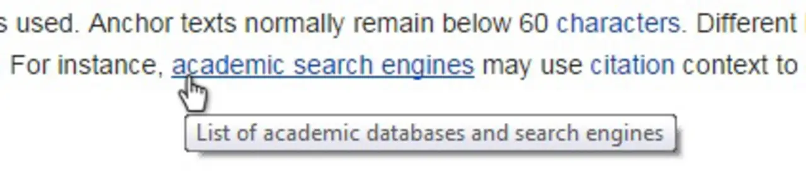

Short answer
Anchor text is the visible wording of a link, and it should say what the destination is.
“Click here” and “read more” repeated across a template do not tell a crawler or a buyer whether the target is a datasheet, a chemical compatibility note, or a contact form. Descriptive anchors are an SEO Health habit for internal discovery. They are not a score for link equity, and this page will not invent one.
Definition
The destination URL can be precise while the anchor is vague, or the reverse. Health checks look at both. A footer that repeats the same “learn more” into fifty PDFs wastes the chance to name each document. Contextual links in the body can carry the specific name. Navigation anchors can stay short if they are still the real section names.
How the link is a path, not a score
Replace repeated generic anchors with the name of the destination page or file.
Anchor text that promises a different page than the URL is a trust problem and a discovery problem. The audit sample is the source URL, the anchor words, and the target. Internal links are the path. A broken target is a separate finding from a vague anchor. Do not collapse them into a single “links” grade.

What to check
- Repeated “click here” or “read more” anchors in a template
- Anchors that name a different document than the URL
- Footer groups that could use each file’s real name
- Broken targets recorded separately from vague wording
- A sample source URL with the anchor and the target
A practical example
A support article links three manuals with the anchor “download.” Changing the anchors to the manual titles makes the path legible. The URLs were already correct. The health change is the wording, recorded on that article URL. It does not claim the manuals will rank.
What this does not claim
Descriptive anchors do not guarantee rankings or citations. This does not guarantee that a crawler will prefer the target.
Where Mika Visibility files this
Mika Visibility treats internal links as SEO Health discovery paths. An orphan has no internal link. A broken link wastes the path. Neither finding is a rank, and neither is a GEO score. Descriptive anchors help a person and a crawler tell pages apart. They do not manufacture authority numbers.
The diagram separates visible words from the URL so the article can talk about wording without a metric.
FAQ
What should anchor text say?
Anchor text is the visible wording of a link, and it should say what the destination is.
What should replace generic anchors?
Replace repeated generic anchors with the name of the destination page or file.
Do descriptive anchors guarantee rankings?
Descriptive anchors do not guarantee rankings or citations. This does not guarantee that a crawler will prefer the target.
Next step
Run a structured SEO + GEO audit to see health findings, growth gaps, and a blueprint you can act on.
Clearer entities, answers, evidence, and context make pages easier to understand and reference. Results in any answer product are not guaranteed.